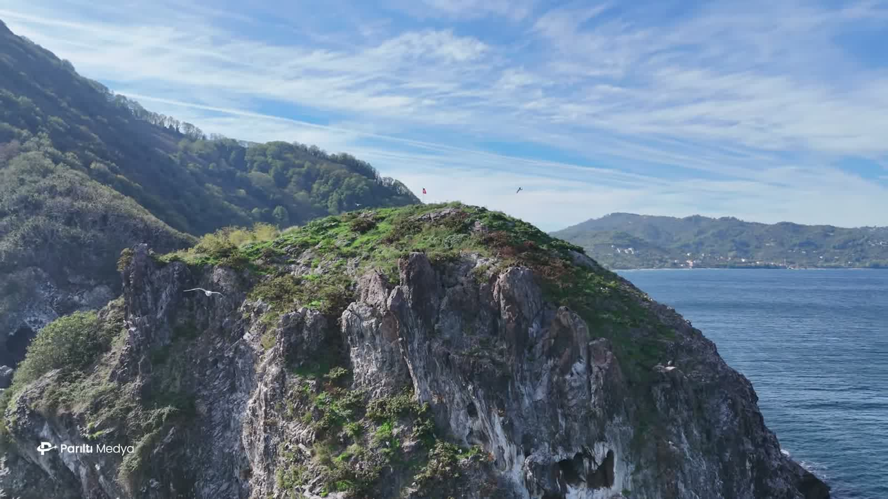
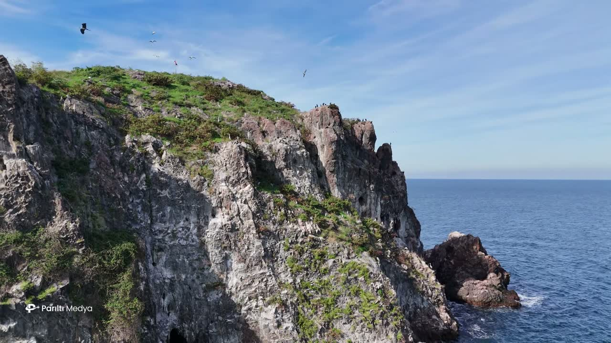
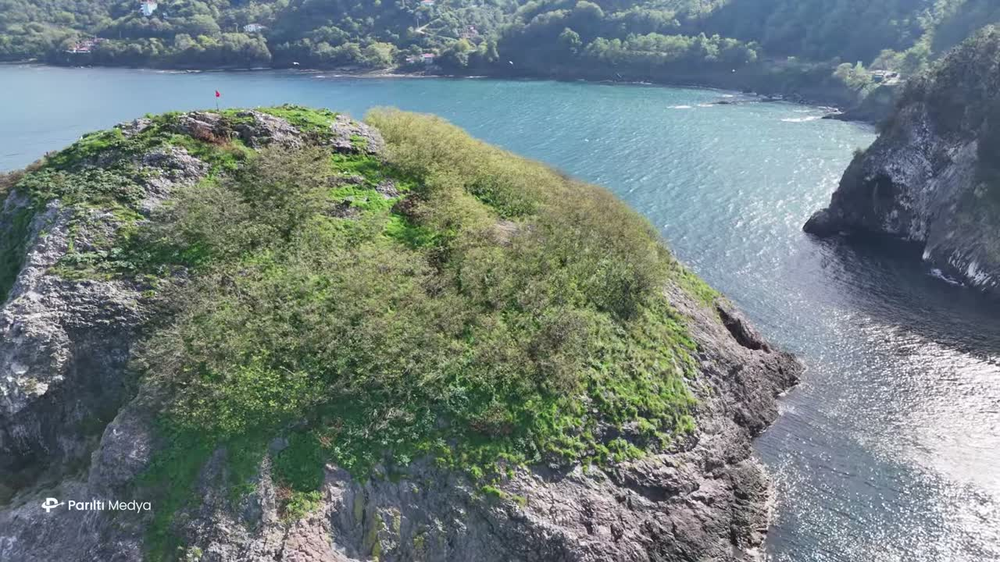
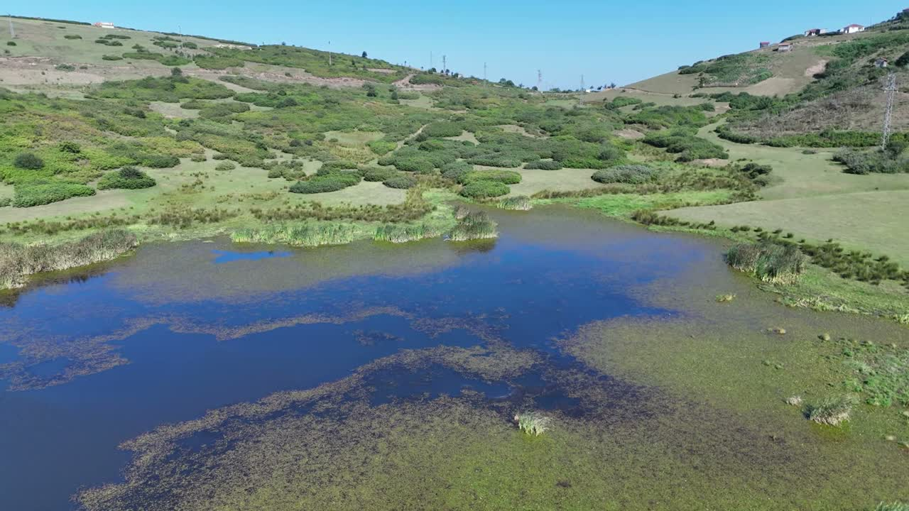
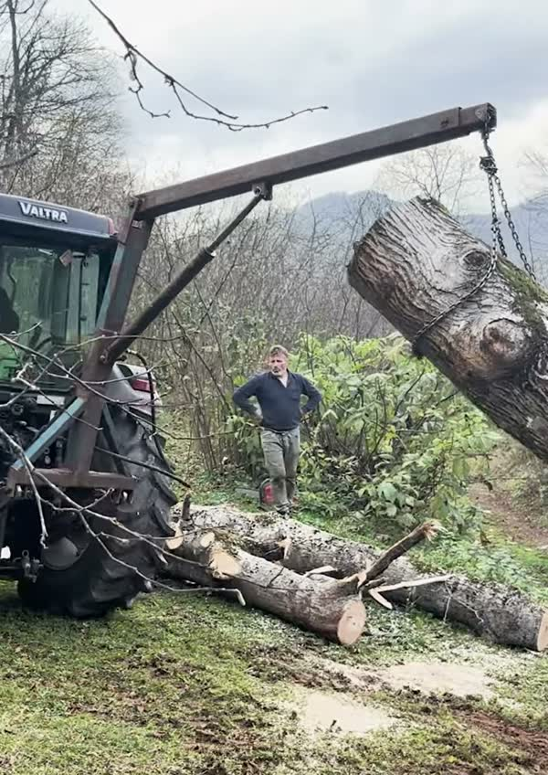
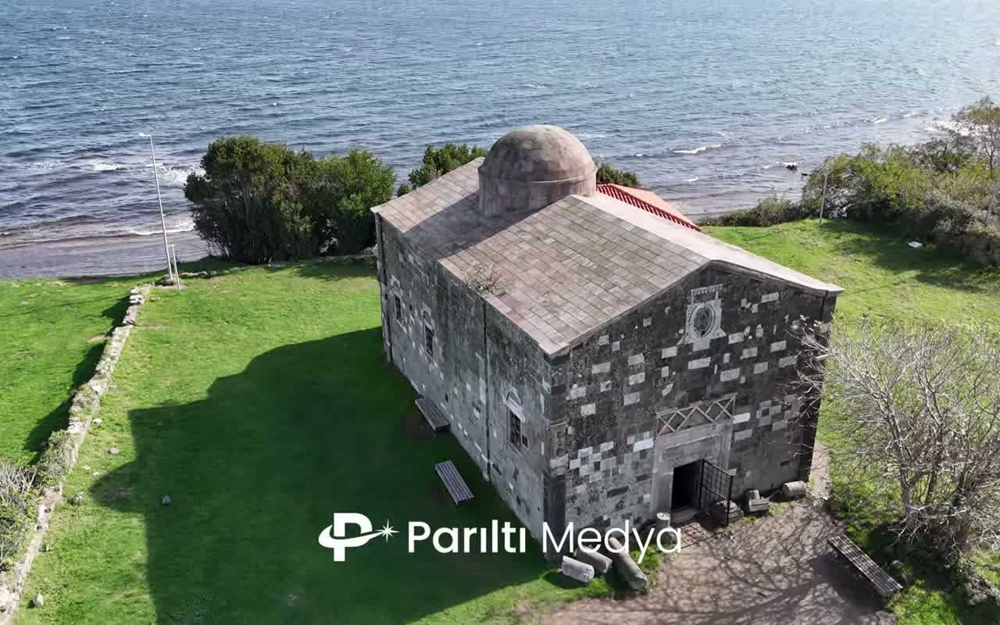
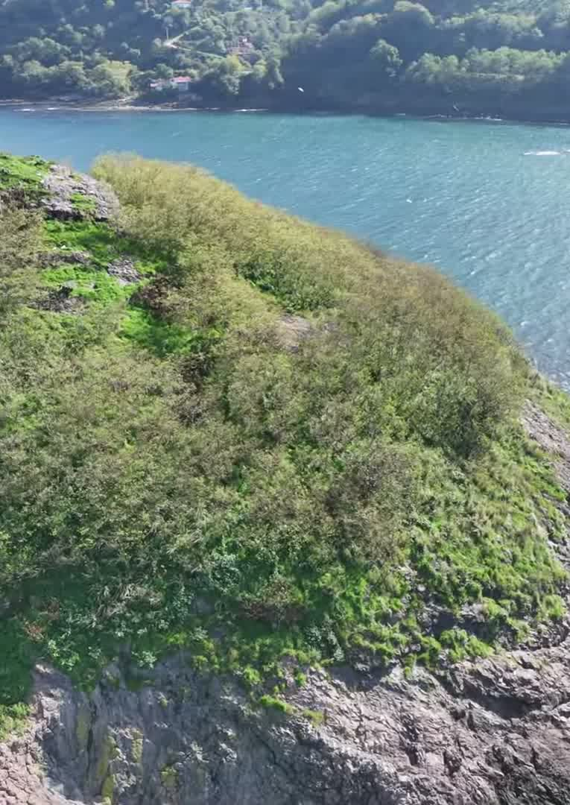
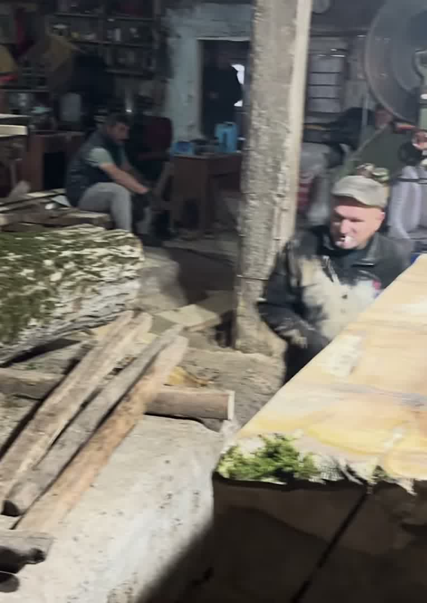
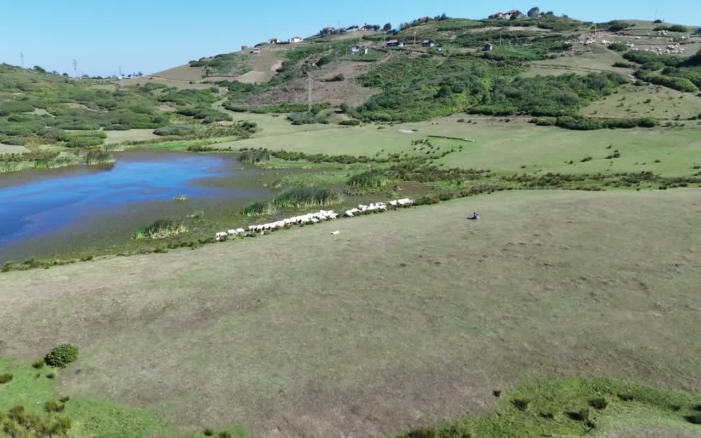

Mavide Sessiz Bir Ada
Ordu'nun Perşembe kıyısından yüz metre açıkta, Karadeniz'in içinden tek bir kaya yükselir. Hoynat Adası küçük, sarp ve hiçbir dönemde üzerinde yaşanmamış bir ada; havadan bakıldığında ise bütün kıyı şeridinin en çarpıcı simgelerinden biri.
Bu film, o kayaya ağır ağır bir yaklaşma. Anlatım yok, acele yok: yalnızca ada, çevresindeki su ve arkadaki yeşil tepeler. Çekerken ada hakkında öğrendiklerimiz ise burada.
/ Bu yazıda:
Kısaca
- Konum: Ramazan köyü, Perşembe ilçesi, Ordu
- Kıyıya uzaklık: Yaklaşık 100 metre
- Büyüklük: Yaklaşık 700 metrekare
- Sakinleri: Yalnızca deniz kuşları: karabataklar ve martılar
- Statü: 2004'ten beri tescilli arkeolojik sit; adaya çıkmak yasak
Yolun yüz metre ötesinde bir kaya
Hoynat, Perşembe ilçesine bağlı Ramazan köyü sınırlarında, Perşembe-Fatsa sahil yolunun hemen yanında. Arkasından geçen kara yolu tüneli bile adını adadan alıyor. Küçücük bir ada: yaklaşık 700 metrekare ve kıyıdan 100 metre kadar açıkta.
Yol kenarından sessiz bir siluet gibi görünür. Yukarıdan bakınca ayrıntılar ortaya çıkar: dört yanında açık renkli, katman katman yalıyarlar; tepesinde ot ve çalıdan bir örtü; ucunun hemen önünde duran daha küçük bir kaya ve koya yaklaştıkça koyu maviden turkuaza dönen su.

Hoynat'ın karabatakları
Adayı özel kılan, üzerinde yaşayanlar. Hoynat, tepeli karabatakların ve çok sayıda martının üreme kolonisi. İl Kültür ve Turizm Müdürlüğü burayı Türkiye'de tepeli karabatakların ürediği tek yer olarak tanımlıyor; yerel haberlere göre kolonide 90 kadar çift bulunuyor.
Kuşlar, karadan hiçbir şeyin ulaşamadığı yalıyar çıkıntılarına ve yarıklarına yuva yapıyor. Filmi dikkatle izlerseniz onları görürsünüz: kayanın üzerinde dönen koyu şekiller ve kuşakların tünediği yerlerde taşa işlemiş beyaz izler.
Kıyıdan bakınca bir siluet. Havadan bakınca kaya, ot ve kanattan koca bir dünya.
/ Parıltı Medya
Kimsenin yaşamadığı adadaki duvarlar
Hoynat'ta hiç yerleşim olmadı ama insanlar adayı kullandı. Kayanın üzerinde duvar kalıntıları, küçük bir kale ve bir sarnıç ayakta; antik dönemde denizcilerin adayı depo ve sığınak olarak kullandığı düşünülüyor. Ada 2004'te bölge koruma kurulunca ikinci derece arkeolojik sit alanı olarak tescillendi.
Yani ada iki kez korunuyor: bir kez insanların çok eskiden orada bıraktıkları için, bir kez de adayı geri alan kuşlar için.

Bakın ama çıkmayın
Koloni nedeniyle Hoynat'a ayak basmak yasak. Ziyaretçiler adayı kıyıdan izliyor; Ordu Büyükşehir Belediyesi de yol kenarında tam bunun için bir seyir alanı düzenledi. İlkbaharda yanınıza bir dürbün alırsanız kuluçka dönemini kimseyi rahatsız etmeden izleyebilirsiniz.
Drone'u burada doğru araç yapan da bu: adayı, üzerinde tek bir ayak izi bırakmadan yakından gösteriyor.
Film nasıl ilerliyor?
Açılış planı anakaradaki bir yalıyarın arkasından başlıyor ve ada ufukta belirene kadar yana kayıyor. Kamera oradan içeri giriyor, yalıyarların hizasında ilerliyor, sonra tepenin üzerine yükselip karaya doğru dönerek korunaklı koyu ve arkasındaki ormanlık yamaçları gösteriyor.
Işık bizden yanaydı: açık bir gökyüzü, ince yüksek bulutlar ve durgun bir deniz. Böyle günlerde Karadeniz kıyısının kurguya pek ihtiyacı kalmıyor.

Giderseniz
Hoynat, Yason Burnu ile aynı kıyı şeridinde; ikisi Ordu'dan günübirlik bir gezide kolayca birleştirilebilir. Sabah ışığı denize bakan yalıyarlara vurur; öğleden sonra güneş tepelerin arkasına geçer ve koy koyu yeşile döner. Her iki durumda da en iyi koltuk kıyıdaki.
Kaynaklar ve ileri okuma
Diğer
filmler
Doğanın Kalbine
Bir yayla göletinden ve uçsuz otlaklardan Karadeniz'in yalıyarlarına: doğanın anlatılmamış hikâyelerinden iki dakika ve arkasındaki manzaralar için kısa bir rehber.
Bir Kütüğün Hayatı: Ağaç Kesiminden Marangozluğa
Yamaçtaki ağaçtan hızar atölyesindeki tahtalara: tek bir kütüğü elden ele izleyen iki dakikalık bir ahşap yolculuğu.
Yason Kilisesi, Ordu
İason ve Argonotların karaya çıktığı söylenen burunda, 19. yüzyıldan kalma taş bir kilise. Tarihi, efsanesi ve havadan görünüşü.









